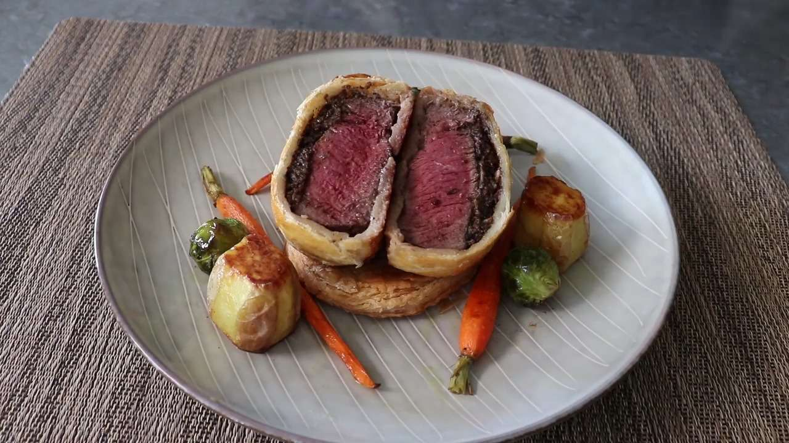

Beef Wellington
Already tried Gordon Ramsay's famous Beef Wellington recipe? If you've already attempted the notorious chef's interpretaion of this classic Christmas dish, you might want to turn your eyes toward the underrated Wellington recipe of one of the oldest cooking YouTubers